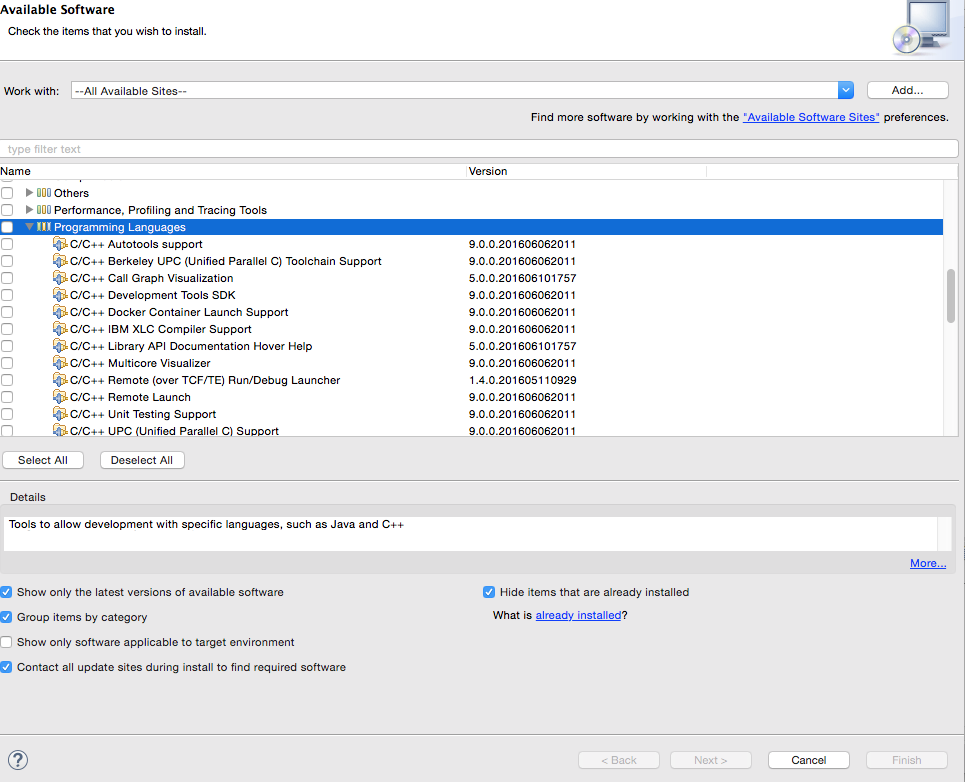
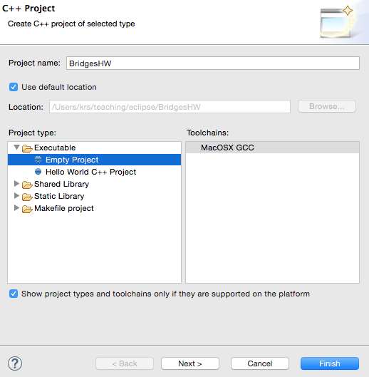
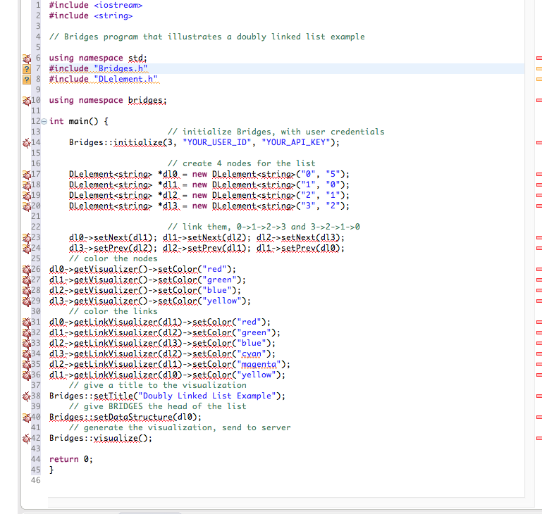
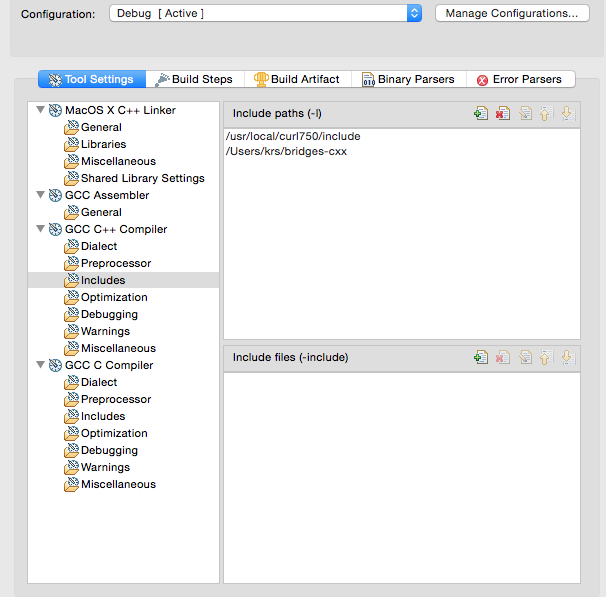
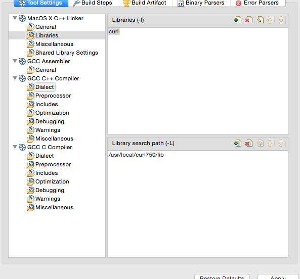
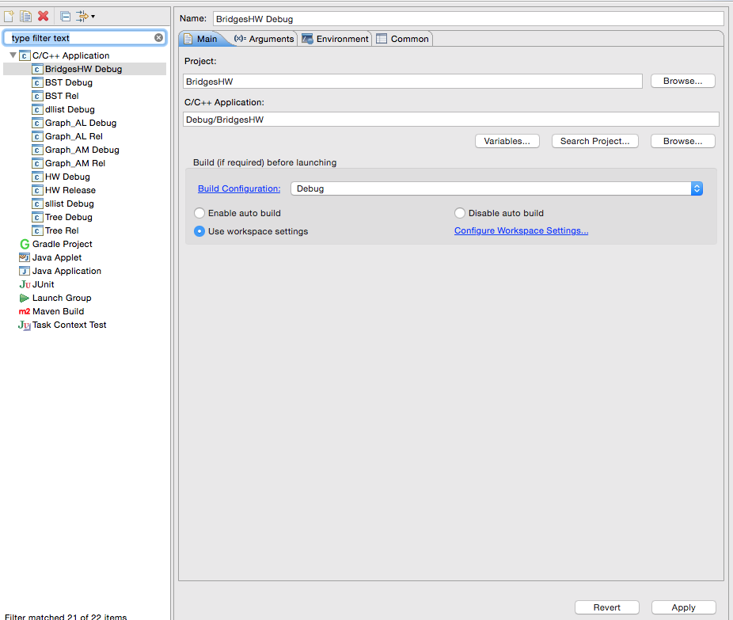
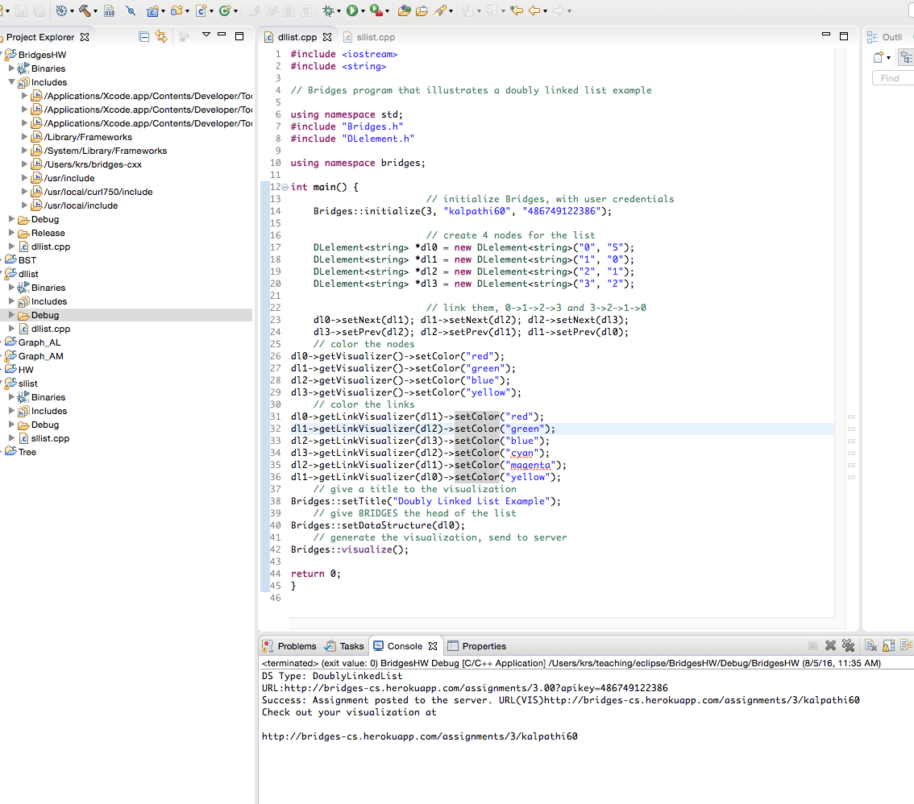
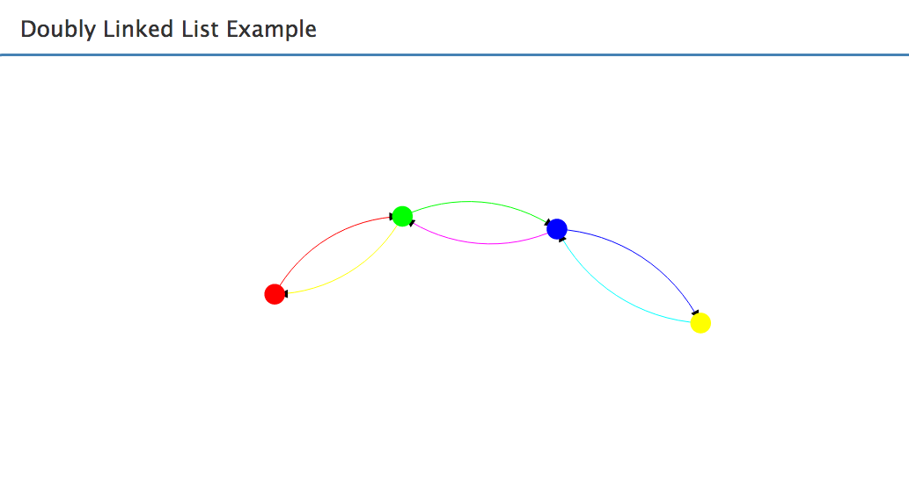

Step 1: Install Eclipse/CDT
- If you do not have Eclipse
installed, download it from the
Eclipse site
and install it on your computer.
- Open up Eclipse, you will next add the C/C++ development
tools; for this go to Help-->Install New Software
menu item.
- Select "All Available Sites" and go to the item
`Programming Languages' in the list.
- Select the C/C++ development tools you need, and install.
- Verify installation: Restart Eclipse.
In File-->New menu, you should see C++ Project as an item.
|

|
|
Step 2: Create Bridges Account
Visit the Bridges
main page
and create yourself an account by clicking the login button
on the top navigation bar. Please ensure that
your user id is devoid of spaces, as it will be
used as part of the web link for your projects.
After creating your account, click
on your profile name in the upper right corner to
view your profile. Once in your profile, you will see your
API Key; you will need this API key later
in the tutorial(as well as in every BRIDGES program
you write). NOTE: Make sure to remember
your password. There is no password recovery option(for now),
and you can only have one account per email address.
|
Step 3: Download the Bridges C++ template files, Install
CURL library
- Download the Bridges C++ class files from this
link. Save this
in a convenient folder. You will need this later.
- BRIDGES uses the CURL
library for communicating with the web
server, and posting assignments. Download CURL from this
link and
install the library in a convenient location
|
Step 4: Create a C++ Project
- File-->New-->C++ Project
- Follow the menus, specify a Project Name
and create an Empty Project
|

|
Step 5: Type or paste in a Bridges example program
- Create a new source file BridgesHW-->New-->File
- Give it a file name and copy/paste/type in your
Bridges program; here a doubly linked list example
is shown.
- In the Bridges::initialize() line, you will need to
replace the arguments with your Bridges user id and
API key (that you got in Step 2).
|

|
Step 6: Project Settings
- Click on the Project and open up the
Properties (last item).
- Open C/C++ Build-->Settings
- Click on Includes under GCC C++ Compiler.
- Click the + symbol on the top right and
add the include path for the Bridges Template files(
refer to Step 3 - you must enter a directory path to
those files. For instance, if your curl library is installed
at /usr/local/curl750, then you will enter
`/usr/local/curl750/include' (without the quotes). Click the
'Apply' button to save.
- Hit the Libraries button; On the top panel add the curl
library, by adding in 'curl'
- On the bottom panel, add the library path; For instance,
if your curl library is installed
at /usr/local/curl750, then enter `/usr/local/curl750/lib'
(without the quotes). Click the 'Apply' button to save.
- Click the 'Dialect' button under GCC C++ Compiler, and
select the 'ISO C++ 11' option for the Language Standard
(not illustrated on the figure). Click the
'Apply' button to save.
- Click on 'Includes', 'Libraries' and 'Dialect' to ensure all
the settings are right.
- Click 'Ok' to save all these settings.


|
|
Step 7: Run Configurations
- We next need to set up 'Run' configurations.
We will illustrated this for a 'Debug' configuration.
- Click on 'Run-->Run Configurations'.
- Create a new configuration by right clicking on
C/C++ Application and selecting `New'.
- Give a name for the configuration. Select
Debug/BridgesHW (must be in Debug/ folder)
for the application name and select the
Debug configuration for the
`Build configuration'. Save and close.
- You can add this configuration to your
Favorites(under the green 'Run' arrow button on the
middle panel.
|

|
Step 8: Run the program
- Please ensure that you have the BRIDGES credentials
in your Bridges::initialize () call (at the top of the
source file.
- If everything is all right your program should compile
and link and you should see a web link on the console.
- For instance, it will look something like
http://bridges-cs.herokuapp.com/assignments/3/kalpathi60
|

|
Step 8: Visualize
- Paste the link into your browser to see the doubly linked
list.
- If you see the visualization, you are done with your
first BRIDGES program. Congratulations!
- YOu should be able to move the visualization with your
left button, click and pull the nodes, see the labels on
mouse over, etc.
|

|